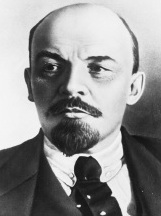

Yirminci yüzyılın başlarında, otokratik bir monarşi Rusya üzerinde kontrolü sağlamak için mücade etti. St. Petersburg’taki devasa Kış Sarayı’ndan II. Nicholas, varlıklı toprak sahiplerinin, yoksullaşmış köylülerin ve açlık içindeki fabrika çalışanlarının var olduğu uçsuz bucaksız ve sorunlu krallığını yönetti. Protestocular, daha fazla siyasi özgürlük talep ettiler, ama çarın ordusu muhalifleri asarak veya onları Sibirya’daki hapishanelere yollayarak, reform için gittikçe yükselen feryatları sürekli bastırdı. Rus halkı için 1914’te başlayan I. Dünya Savaşı, bardağı taşıran son damlaydı. İnsan kırımından (Avrupa güçler dengesi siyaseti adına ölen 1,7 milyon Rus askeri) dehşete düşmüş halk, sonunda 1917’de Çarı devirdi.

Başlangıçta Rus reformcuları, monarşinin Fransa ve İngiltere’ye yakın bir liberal demokrasi ile yer değiştirmesini umut ettiler. Ama Rusya’nın Simbirsk kasabasından orta yaşlı bir siyasi aktivistin farklı fikirleri vardı. Çarın tahttan çekildiği bir yıl içinde Vladimir Ilyich Lenin (1870-1924) ve komünist destekçileri Rusya genelinde gücü ele geçirdiler. Liberal demokrasiyi reddettiler ve Marksist siyaset felsefesi çevresinde organize ettikleri yeni bir tip hükümeti inşa etmeye çalıştılar. Eski çar imparatorluğunun kırık dökük parçalarından Lenin ve komünistler yeni bir ulus yarattılar: Sovyet Sosyalist Cumhuriyetler Birliği (SSCB).
Çar yönetimi altında Lenin, yıkıcı eylemlerinden dolayı pek çok yılı sürgünde veya hapishanede geçirdi. Bu zaman boyunca Lenin, ‘Leninizm’ olarak bilinen fikirlerini biledi. Leninizm, Karl Marx’ın felsefesini aslında komünist bir devleti yönetmek üzere bir yönetim modeline uyarlamaya girişti. Uygulamada Sovyetler Birliği’nde Leninizm, Rus halkı için devasa acılara neden oldu. 1924’te ölümünden önce Lenin hükümeti, özel teşebbüsü yasakladı, binlerce Sovyet yurttaşını idam etti ve milyonlarcasını öldüren bir kıtlığı tetikledi. Endüstriyel üretim ölçüsünce Lenin’in devrimi halen bir başarıdır. 1945’te II. Dünya Savaşı sonuyla Sovyetler Birliği, askerî bir süper güçtü. Joseph Stalin, Lenin’in 1924’te ölümünden sonra, otuz yıllık merhametsiz yönetimi boyunca Komünist Parti’nin kontrolünü sağlamlaştırarak gücü ele aldı.
EK BİLGİLER:
1. Lenin’in ölümünden sonra vücudu, mumyalandı ve bugün halen Moskova’nın merkezindeki bir mozolede yer alan mekana kondu.
2. Lenin, İngiliz romancı George Orwell (1903-1950) tarafından yazılan ünlü “Hayvan Çiftliği” (1945) kitabındaki Yaşlı Majör karakterine esin kaynağıdır.
3. Görevden alınan çar ve ailesi, 1918’de Sovyetler tarafından öldürüldü.